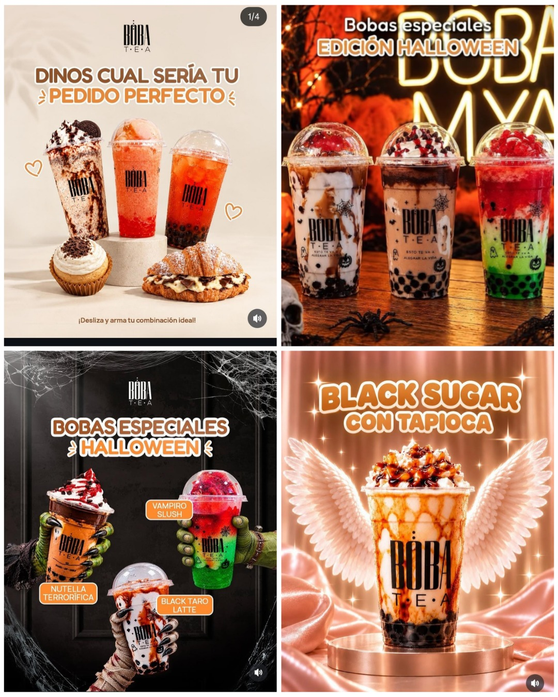

¡Un mundo de sabores en cada sorbo!
Descubre Boba Tea Piura y déjate sorprender.
¿Te imaginas disfrutar una bebida refrescante, llena de color y con sabores que sorprenden desde el primer sorbo? 💗 Si te gusta probar cosas nuevas, el bubble tea puede convertirse en una de tus opciones favoritas. Sus diferentes combinaciones, texturas y presentaciones hacen de cada bebida una experiencia especial. En Piura, Boba Tea te invita a descubrir una variedad de bebidas ideales para acompañar tus momentos con amigos, darte un gusto después de clases o simplemente disfrutar algo diferente durante el día.
✨ ¿Qué hace especial al bubble tea?
El bubble tea, también conocido como té de burbujas, destaca por combinar sabores, colores y texturas en una sola bebida. Existen opciones elaboradas a base de té, mezclas frutales y alternativas con leche, por lo que cada persona puede encontrar una combinación que se adapte a sus preferencias. Lo mejor es que no se trata solamente de una bebida: también es una oportunidad para descubrir nuevos sabores y compartir momentos agradables.
🍓 Una variedad de sabores para descubrir
- Bubble tea:una bebida característica por su combinación de té y perlas
- Tés frutales: opciones inspiradas en sabores de frutas
- Smoothies:bebidas con una textura cremosa y frutal.
- Cremoladas y bebidas tipo slush:alternativas frías y refrescantes para disfrutar.

Sabores que conquistan en cada visita
¿Te provoca algo frutal, un clásico reconfortante o una opción con leche? Explora combinaciones para distintos antojos y encuentra ese sabor de boba tea que querrás volver a pedir.
Tu bebida, a tu manera
Personaliza tu experiencia con toppings y perlas de tapioca: cada textura suma una sorpresa. Elige la combinación que más te guste y convierte cada vaso en tu favorito.
Frescura para disfrutar a cualquier hora
Las bebidas frías son una opción deliciosa para refrescar tu día en Piura. Sus colores vivos, hielo y sabores hacen que el primer vistazo sea tan tentador como el primer sorbo.
Una experiencia moderna y divertida
El bubble tea combina té, mezclas creativas y toppings en una bebida diferente. Cada detalle —del color del vaso a las perlas— invita a probar, descubrir y disfrutar algo nuevo.
El plan perfecto para compartir
Reúne a tus amigos o ven en familia: comparar sabores, elegir toppings y probar nuevas combinaciones convierte cada visita en un momento alegre para recordar.
¿Por qué el bubble tea está en tendencia?
Es una bebida que reúne personalización, variedad y una presentación irresistible. Hay opciones para diferentes gustos y siempre una nueva combinación por descubrir.
Un sorbo que también se disfruta con la mirada
Vasos coloridos, frutas y perlas crean una experiencia fresca e instagrameable. Elige tu mezcla, toma tu foto y comparte ese pequeño momento feliz.
Atrévete a probar algo delicioso y diferente.
Visítanos y vive la experiencia Boba Tea Piura: elige tus sabores, suma tus toppings favoritos y disfruta cada sorbo.
Conocer nuestros sabores¡Sigamos compartiendo sabores!
Sigue nuestras redes o encuentra el local cuando agreguemos los enlaces oficiales.
Configura los perfiles oficiales de Boba Tea Piura desde el editor para activar estos enlaces.
Cuéntanos cuál sería tu sabor ideal
Comparte tu experiencia con Boba Tea Piura, tus combinaciones favoritas o ese topping que no puede faltar.
¡Sé la primera persona en compartir tu sabor favorito!